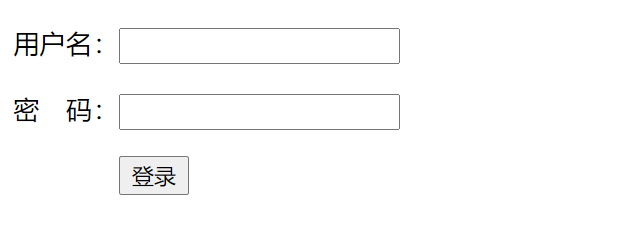

Contents
23.4.22. 附录1.Django入门+实战教程+笔记¶
1. 初识¶
python manage.py startapp stu 创建新应用 名称
  制表符
python manage.py runserver 127.0.0.1:8000 启动服务器
python manage.py 查看功能
python manage.py makemigrations 名称 创建迁移表
2. 登录，登录首页实现步骤¶
1.创建一个Djan项目
2.在终端中创建应用 python manage.py startapp 应用名
3.在项目包中的settings.py中添加应用
INSTALLED_APPS = [
'django.contrib.admin',
'django.contrib.auth',
'django.contrib.contenttypes',
'django.contrib.sessions',
'django.contrib.messages',
'django.contrib.staticfiles',
'stu'
]
4.确定访问路径http://127.0.0.1:8000/student/
5.配置项目根路由
from django.contrib import admin
from django.urls import path, include
urlpatterns = [
path('admin/', admin.site.urls),
path('student/', include('stu.urls')) # ctrl+目标即可超链接，，include是添加子路由
]
6.在应用包下创建并配置url.py文件
# -*- codeing = utf-8 -*-
# @Software : PyCharm
from django.conf.urls import url
from . import views # python3 必须加 from .
urlpatterns=[
url('', views.login_view)
]
7.在应用下view.py文件创建处理函数
8.在templates目录下创建login.html文件 action=’ ’, 就是账号密码提交地址
<!DOCTYPE html>
<html lang="en">
<head>
<meta charset="UTF-8">
<title>Title</title>
</head>
<body>
<form action="" method="get">
<p>
<label>用户名：</label><input type="text" name="unname"/>
</p>
<p>
<label>密 码：</label><input type="password" name="pwd"/>
</p>
<p>
    <input type="submit" value="登录"/>
</p>
</form>
</body>
</html>
效果图：
3. GET方式_登录功能¶
3.1 post请求的请求报文¶
POST /06_web_HTTP/success.html HTTP/1.1
Host: localhost:8080
Connection: keep-alive
Content-Length: 30 请求体中数据的长度(请求参数)
Cache-Control: max-age=0 不缓存
Origin: http://localhost:8080
Upgrade-Insecure-Requests: 1
User-Agent: Mozilla/5.0 (Windows NT 6.1; WOW64) AppleWebKit/537.36 (KHTML, like Gecko) Chrome/58.0.3029.81 Safari/537.36
Content-Type: application/x-www-form-urlencoded
Accept:text/html,application/xhtml+xml,application/xml;q=0.9,image/webp,*/*;q=0.8
Referer: http://localhost:8080/06_web_HTTP/login.html
Accept-Encoding: gzip, deflate, br
Accept-Language: zh-CN,zh;q=0.8
3、空行
4、请求体(请求参数 多个参数之间使用&连接)
username=admin&password=123213
3.2 post响应报文¶
HTTP/1.1 200 OK
Date:Sun,01 Apr 2020 13:14:07 GMT(成功响应的时间)
Server: Apache-Coyote/1.1 (服务器内核版本)
Accept-Ranges: bytes (数据单位)
ETag: W/"157-1504593208325"
Content-Type: text/html;charset=utf-8 (响应文件的类型)
Content-Length: 15 (响应体内容大小)
3、空行
4、响应体(服务器给浏览器的响应体中的内容才是浏览器解析显示在页面中的内容)
3.3 GET和POST请求区别¶
1、POST请求的请求参数在请求实体内容中，GET请求的请求参数存放在URL中
2、GET请求相对不安全，post相对安全 （其实都不安全）
3、GET请求的URL参数长度有限（不超过2K），post参数大小没有限制
4、GET请求一般做查询（有缓存），POST请求一般做添加/删除/修改（无缓存）
5、Django服务器GET/POST请求为什么接受参数方式一样？
因为他们都是QueryDict对象（django.http.request）
3.4 GET请求方式¶
<form method="get">
浏览器地址栏直接访问
<a href="/student/">超链接</a>
window.location.href="/student/"
3.5 POST请求方式¶
<form method="post">
浏览器地址栏直接访问
<a href="/student/">超链接</a>
window.location.href="/student/"
3.6 HTTP特性¶
1. HTTP1.1版本后支持长连接
2. 单项性协议（必须先有请求后有响应）
3. 无状态的协议
Cookie：客户端相关
Session：服务器相关
3.7 解决POST请求错误403¶
MIDDLEWARE = [
'django.middleware.security.SecurityMiddleware',
'django.contrib.sessions.middleware.SessionMiddleware',
'django.middleware.common.CommonMiddleware',
#'django.middleware.csrf.CsrfViewMiddleware',
'django.contrib.auth.middleware.AuthenticationMiddleware',
'django.contrib.messages.middleware.MessageMiddleware',
'django.middleware.clickjacking.XFrameOptionsMiddleware',
]
或者在html文件加入这个
<body>
<form action="/register/" method="post">
{% csrf_token %}
<input type="submit" value="注册"/>
</form>
</body>
4. 注册功能¶
4.1 创建Stu模型类¶
from django.db import models
# Create your models here.
class Student(models.Model):
sname = models.CharField(max_length=30, unique=True) ## 设置唯一用戶名
spwd = models.CharField(max_length=30)
def __str__(self):
return u'Student:%s' % self.sname # Student:list
# def __unicode__(self): # python2.0版本这样写
# return u'Student:%s'%self.sname
4.2 创建数据库表¶
#创建当前应用的迁移文件
python manage.py makemigrations stu
#生成数据库表
python manage.py migrate
python manage.py migrate 应用名 # 只执行当前应用名
#查看迁移文件生成的SQL语句
python manage.py sqlmigrate student 0001
4.3 配置URL(stu/urls.py)¶
#!/usr/bin/env python
from django.conf.urls import url
from . import views
urlpatterns = [
url(r'^login/', views.login_view),
url(r'^register/', views.index_view),
url(r'^show/', views.show_view),
]
4.4 连接mysql数据库¶
DATABASES = {
'default': {
'ENGINE': 'django.db.backends.mysql',
'NAME': 'stu', # 数据库名称
'HOST': '127.0.0.1', # 服务器
'PORT': '3306',
'USER': 'root',
'PASSWORD': 'OSChina@2020', # 密码
"OPTIONS": {"init_command": "SET default_storage_engine=INNODB;"}
}
}
# 语言编码也可以改一下
LANGUAGE_CODE = 'zh-Hans'
TIME_ZONE = 'Asia/Shanghai'
USE_I18N = True
USE_L10N = True
USE_TZ = True
djangoStu/__init__.py
import pymysql
pymysql.install_as_MySQLdb()
4.5 views内容¶
from django.http import HttpResponse
from django.shortcuts import render
from .models import *
# Create your views here.
def index_view(request):
m = request.method
if m == "GET":
return render(request, 'register.html')
else:
uname = request.POST.get("uname", "")
pwd = request.POST.get("pwd", "")
if uname and pwd:
stu = Student(sname=uname, spwd=pwd)
stu.save()
return HttpResponse("注册成功!")
return HttpResponse("注册失败!")
def show_view(request):
# 1.查询stu_student表中的所有数据
stus = Student.objects.all() # 查询所有
# 2.
return render(request, 'show.html', {'students': stus}) # 字典传值
def login_view(request):
if request.method == 'GET':
return render(request, 'login.html')
else:
# 1.获取请求参数
uname = request.POST.get('uname', '')
pwd = request.POST.get('pwd', '')
# 2.查询数据库
if uname and pwd:
c = Student.objects.filter(sname=uname, spwd=pwd).count() # 根据某个条件查询
if c == 1:
return HttpResponse('登录成功！')
# 3.判断是否登录成功
return HttpResponse('登录失败！')
4.6 注册页面HTML源码¶
register.html
<!DOCTYPE html>
<html lang="en">
<head>
<meta charset="UTF-8">
<title>注册界面</title>
</head>
<body>
<form action="/register/" method="post">
{% csrf_token %}
<p>
<label for="ua">用户名：</label><input type="text" name="uname" id="ua"/>
</p>
<p>
<label for="pd">密 码：</label><input type="password" name="pwd" id="pd"/>
</p>
<p>
<input type="submit" value="注册"/>
</p>
</form>
</body>
</html>
如果你访问127.0.0.1:8000/student/show/，就可以利用模型，调用mysql库，在html网页查看数据库信息
show.html
<!DOCTYPE html>
<html lang="en">
<head>
<meta charset="UTF-8">
<title>Title</title>
</head>
<body>
<table border="1" cellspacing="0" width="500px">
<tr>
<th>编号</th>
<th>姓名</th>
<th>密码</th>
</tr>
{% for stu in students %}
<tr>
<td>{{ forloop.counter }}</td>
<td>{{ stu.sname }}</td>
<td>{{ stu.spwd }}</td>
</tr>
{% endfor %}
</table>
</body>
</html>
5. admin后台管理类操作数据库¶
python manage.py createsuperuser 创建超级用户
设置你想要的账号和密码，注意密码不显示！记住一定要注释，很容易忘记。
添加 admin.site.register(Movie) 使得其与后台站点绑定
6. 单表查询¶
定义一个函数_显示ORM底层生成SQL
showsql():
from django.db import connection
print(connection.queries[-1]['sql'])
6.1 查询单个对象¶
ASC升序 ——————— DESC降序
所有的继承自model.Model的类 都会有一个叫objects（管理者）
----查询一个 （有且只能有一个）（少于一个或者多于一个都报错 ）
返回值Movie对象
Movie.object.get(mid=147) 注意当不存在时会报错！！！
SELECT `movie`.`mid`, `movie`.`mname`, `movie`.`mdesc`, `movie`.`mimg`, `movie`.`mlink` FROM `movie` LIMIT 21
----获得第一个
Movie.objects.first()
Movie.objects.filter()
----获得最后一个
Movie.objects.last()
----获得记录的总数
Movie.objects.count()
6.2 查询多个对象¶
----获得所有的记录
Movie.objects.all()
#在django的1.11.6中默认中只是获得21个
#懒加载
Movie.objects.filter()
----切片 （不支持负数索引）
Movie.objects.all()[20:40]
# 底层直接使用了limit字句，可以自动的分页
# django的orm性能非常强大，能节省很多工作
----过滤
# 集合（游标，结果集，查询集）
Movie.objects.filter(mname=‘麻辣学院’)
# 底层直接使用了limit字句，可以自动的分页
# django的orm性能非常强大，能节省很多工作
----模糊查询
like
%（多个字符） _(一个字符)
SELECT * from movie WHERE mname LIKE '%爱情'
----查询爱情结尾的
SELECT * from movie WHERE mname LIKE '%爱情'
Movie.objects.filter(mname__endswith='爱情')
----忽略大小写
Movie.objects.filter(mname__istartswith='h')
----查询某个字段是否为null
Movie.objects.filter(mname__isnull=True)
----多条件查询
Movie.objects.filter(mname__contains='爱情',mid=147)
and
Movie.objects.filter(mname__contains='爱情').filter(mid=147)
----部分查询
Movie.objects.values('mname','mid').filter(mname__contains='爱情')
----排除一部分
Movie.objects.filter(mname__contains='爱情').exclude(mname__startswith='爱情')
----排序
Movie.objects.order_by('mid') 升序
Movie.object.order_by('-mid') 降序
6.3 日期查询¶
----查询大于某个时间的记录
Post.objects.filter(created__gt='2017-10-20')
----查询最近一个月的帖子（查询最近不活跃的用户）
def get_recent_month_post():
import datetime
current = date.date.today()-datetime.timedelta(days=30)
current = str(current)
return Post.objects.filter(created__gt=current)
----查询十月二十号--十一月二十号的所有的记录
错误的
Post.objects.filter(created__in=('2017-10-20','2017-11-20'))
指的是这两个时间中的一个
正确的（SQL语句）
Post.objects.filter(created__range=('2017-10-20','2017-11-20'))
Post.objects.filter(created__range=(147,149)) 或者 BETWEEN 147 AND 149
6.4 范围查询¶
1.查询价格大于700的书籍
res = models.Books.objects.filter(price__gt=700) # gt表示大于
print(res)
print(res.query)
2.查询价格小于700的书籍
res = models.Books.objects.filter(price__lt=700) # lt表示小于
print(res)
print(res.query)
价格大于等于700 小于等于700
res1 = models.Books.objects.filter(price__gte=700)
res2 = models.Books.objects.filter(price__lte=700)
print(res1.query,res2.query)
3.查询价格要么是666.66 要么是999.66 要么是10000
res = models.Books.objects.filter(price__in=[666.66,999.66,10000])
print(res)
"""python对数字不是很敏感 精确度不高 很多时候我们会采取字符串存储数字类型"""
4.查询价格在500到800之间的
res = models.Books.objects.filter(price__range=(500,800))
print(res.query)
5.查询书名中包含字母s的书
res = models.Books.objects.filter(title__contains='s') # 区分大小写
print(res.query)
res = models.Books.objects.filter(title__icontains='s') # 区分大小写
print(res)
6.查询出版日期是2021的书
res = models.Books.objects.filter(publish_time__year=2021) # year代表年
print(res.query)
7.查询出版日期是3月的书
res = models.Books.objects.filter(publish_time__month=3) # month代表月
print(res)
7. 单表增_删 改¶
7.1 增加¶
#方法1
post = Post(title='博客11',created='2017-2-20')
post.save()
#方法2
Post.objects.create(title='博客12',created='2018-11-11') #返回值是添加的对象
7.2 删除¶
#方法1
m = Movie.objects.filters(mname__startswith='h')
m.delete()
# BINARY不是函数，是类型转换运算符，比较时，区分大小写
DELETE FROM 'movie' WHERE 'movie', 'mname' LIKE BINARY ‘h%’
#方法2（删除所有包含博客名字的帖子）
Post.objects.filter(tiltle__contains='博客').delete()
7.3 修改¶
#方法1 （更新的是所有的字段）
post = Post.objects.first()
post.title='更新了'
post.save()
UPDATE 'post_post' SET 'title' = '更新了','created' = '2017-11-27' WHERE 'post_post' ,'id' = 26
#方法2（只更新修改的字段），推荐使用
Post.objects.filter(id=26).update(title='又更新了')
UPDATE 'post_post' SET 'title' = '又更新了' WHERE 'post_post'.'id' = 26
总结
# 准备书籍表
# models.py
class Books(models.Model):
title = models.CharField(verbose_name='书名',max_length=32)
price = models.CharField(verbose_name='价格',max_length=32)
publish_time = models.DateTimeField(verbose_name='日期',auto_now_add=True)
def __str__(self): # 改变对象的字符串显示,打印对象自动触发
return self.title # 返回值
# 增加
res = models.Books.objects.create(title='人性的弱点',price=687.90)
print(res.title) # 人性的弱点
'''create返回值就是当前被创建的数据对象'''
# 查询
res = models.Books.objects.all()
print(res.query) # query查看当前orm内部对应的原生sql语句
res = models.Books.objects.filter()
print(res.query)
res = models.Books.objects.filter(title='jason')
print(res)
"""filter括号内可以放多个参数 默认是and关系 推荐使用 条件不符合不会报错"""
res1 = models.Books.objects.get(title='jason')
print(res1)
"""get括号内可以放多个参数 默认是and关系 不推荐使用 条件不符合直接报错"""
# 修改
# 方式一：（推荐）
res = models.Books.objects.filter(pk=1).update(price=666.66)
print(res) # 返回值是受影响的行数
# 方式二：（少用）
book_obj = models.Books.objects.filter(pk=2).first()
book_obj.price = 999.66
book_obj.save() # 效率低(所有字段重新写一遍)
"""pk能够自动查找到当前表的主键字段 我们不需要查看当前表主键字段名"""
# 删
models.Books.objects.filter(pk=1).delete()
更多内容参考文献：
8. 创建单表¶
8.1 常用字段类型¶
—> django所有的数据模型都继承自model.Model
—> CharField max_length (输入框)
—> TextField 没有长度限制的字符串（文本域）
—> DateField 日期
—> DateTimeField 日期+时间
—> BooleanField 真假
—> NullBooleanField ，Null 真假
—> Integer 整数
—> PositiveIntegerField 正整数
—> DecimalField max_digits(几位数) decimal_place (小数点后保留几位)
—> ImageField 图片 依赖于Pillow（处理图片）upload_to='upload'指定文件上传到目录
—> FileField（ImageField继承FileField）
—> AutoField
—> OneToOneField 1:1 一对一 学生和学生证 CASCADE 级联删除
—> ForeignKey 1:n 一对多 班级和学生
—> ManyToManyField n:n 多对多 学生和课程
—> EmailField 邮箱 #字符串@域名.comn
—> UUIDField 重复的概率非常低基本可以忽略，全世界都不一样的标示，uuid的产生和服务器的环境有关（CPU，网关）唯一的标示，用户模块，订单号 #唯一标识符
—> 不同的字段在后台对应不同的html的组件
—> ImageField 依赖于Pillow组件（python库）
8.2 常用属性¶
—> unique 标示这个字段唯一
—> default 默认的意思，（如果不写的话就使用默认的值）
—> null=True 允许字段为null，（允许数据库为null）数据库层面的
—> blank=True 表单阶段的，admin后台的 可以为空
—> auto_now 针对时间段，自动调整单签，（当修改目的时候，这个时间会更新），每次修改都会更新（修改，保存的时候才会生效）
—> auto_now_add 针对时间的，只添加一次，（创建的时间）
8.3 重点理解属性¶
—> 表单层面的东西（js判断字段是否是“”），不需要重写迁移数据库
—> unique = True 可以任何字段
—> default 数据库+表单层面（同时生效）
—> auto_now_add 创建的时候回自动的添加时间（数据库）（后台表单层面找不到这个字段）
8.4 使用OneToOneField(一对一)¶
例：员工基本信息类-员工详细信息类 员工工号
models.OneToOneField(to='UserInfo',on_delete=models.CASCADE)： 将字段定义在任意一端。
字段参数：
to：设置要关联的表。
to_field：设置要关联的字段。
on_delete：当删除关联表中的数据时，当前表与其关联的行的行为。
# -*- codeing = utf-8 -*-
from django.db import models
# 学生和学生证的关系
class Student(models.Model):
# 学号
sno = models.AutoField(primary_key=True)
# 学生姓名
sname = models.CharField(max_length=30, unique=True)
class Meta:
db_table='t_student'
def __str__(self):
return u'Student:%s' %self.sname
class Scard(models.Model):
# 学号
student = mdoels.OneToOneField(Student,Primary_key=True,on_delete=models.CASCADE)
department = models.CharField(max_length=50)
major = models.CharField(max_length=20)
enterdate = models.DateField()
class Meta:
db_table='t_scard'
查询过程
from stu.models import *
student = Student.objects.create(sname='hujianli')
Scard.objects.create(student=student,major='计算机')
# <Scard:[Bad Unicode data]>
Student.objects.first().scard # 正向查询
# <Scard: Scaed:计算机>
# Scard.objects.first().student
<Student: Student:hujianli1>
8.5 使用ForeignKey(一对多）¶
例：图书类-英雄类
models.ForeignKey(to=UserProfile, on_delete=models.CASCADE) ：将字段定义在多的一端。
字段参数：
to：设置要关联的表
to_field：设置要关联的表的字段
related_query_name:反向查询操作时，使用的连接前缀，用于替换表名。
on_delete：当删除关联表中的数据时，当前表与其关联的行的行为。
models.CASCADE
删除关联数据，与之关联也删除
models.DO_NOTHING
删除关联数据，引发错误IntegrityError
models.PROTECT
删除关联数据，引发错误ProtectedError
models.SET_NULL
删除关联数据，与之关联的值设置为null（前提FK字段需要设置为可空）
models.SET_DEFAULT
删除关联数据，与之关联的值设置为默认值（前提FK字段需要设置默认值）
models.SET
删除关联数据，
a. 与之关联的值设置为指定值，设置：models.SET(值)
b. 与之关联的值设置为可执行对象的返回值，设置：models.SET(可执行对象)
db_constraint： 是否在数据库中创建外键约束，默认为True，可以设置为False。
True：建立外键，默认是True
False：不建立外键
好处：不会出现脏数据
坏处：插入的时候，效率低
企业中：通常不建立，程序员控制
class Clazz(models.Model):
cno = models.AutoField(primary_key=True)
cname = models.CharField(max_length=30)
# 学生表（从表 多）
class Student(models.Model):
sno = models.AutoField(primary_key=True)
sname = models.CharField(max_length=30)
cno = models.ForeignKey(Clazz, on_delete=models.CASCADE, related_name='sts')
def __str__(self):
return u'Student:%s' % self.sname
from stu.models import *
cls = Clazz.objects.create(cname='B201Python')
cls1 = Clazz.objects.create(cname='B202Java')
Student.objects.create(sname='zhangsan',cno=cls)
# <Student: Student:zhangsan>
Student.objects.create(sname='lisi',cno=cls)
# <Student: Student:lisi>
Clazz.objects.first().student_set.all() # 正向查询
# <QuerySet [<Student: Student:zhangsan>, <Student: Student:lisi>]>
Student.objects.first().cno # 反向查询
# <Clazz: Clazz object (1)>
----------------------------------------------------------------------------
from stu.models import *
Clazz.objects.first().sts.all() # related_name='sts'修改了 student_set.all()
# <QuerySet [<Student: Student:zhangsan>, <Student: Student:lisi>]>
函数封装，打包输入，->>>多表的插入
#!/usr/bin/env python
# -*- coding:utf8 -*-
import os
if __name__ == "__main__":
# 加载配置文件，跑django的项目，最开始就是把配置文件加载上
os.environ.setdefault("DJANGO_SETTINGS_MODULE", "djangoStu.settings")
import django # 安装了django模块，就可以import
django.setup() # 使用环境变量中的配置文件，跑django
from stu1.models import Clazz, Student # 单独测试django py文件
def insertData(clsname, *snames):
try:
cls = Clazz.objects.get(cname=clsname)
except Clazz.DoesNotExist:
cls = Clazz.objects.create(cname=clsname)
for sn in snames:
try:
stu = Student.objects.get(sname=sn)
except Student.DoesNotExist:
Student.objects.create(sname=sn, cno=cls)
insertData('B203HTML5班', 'zhangjie', 'xiena')
附录：调用Django环境¶
Python脚本中调用Django环境
方式1
任意创建一个py文件，eg:until.py 在该文件内书写固定的配置
import os
if __name__ == "__main__":
# 加载配置文件，跑django的项目，最开始就是把配置文件加载上
os.environ.setdefault("DJANGO_SETTINGS_MODULE", "djangoStu.settings")
import django # 安装了django模块，就可以import
django.setup() # 使用环境变量中的配置文件，跑django
from stu1.models import Clazz, Student # 单独测试django py文件
方式2
直接使用pycharm提供的python console
8.6 使用ManyToManyField(多对多)¶
例：新闻类-新闻类型类 体育新闻 国际新闻
models.ManyToManyField(to='UserInfo',on_delete=models.CASCADE) ：将字段定义在任意一端。
用于表示多对多的关联关系。在数据库中通过第三张表来建立关联关系
字段参数
to：设置要关联的表
to_field：设置要关联的表的字段
related_query_name：反向查询操作时，使用的连接前缀，用于替换表名。同ForeignKey字段。
symmetrical：仅用于多对多自关联时，指定内部是否创建反向操作的字段。默认为True。
through:：设置关联的字段。手动创建第三张表，指定通过哪个表
through_fields：设置关联的字段。关联字段是什么
db_table：默认创建第三张表时，数据库中表的名
多对多关系建立的三种方式
第一种：自动创建（常用：第三张表没有其他字段）
class Book(models.Model):
title = models.CharField(max_length=32, verbose_name="书名")
# 通过ORM自带的ManyToManyField自动创建第三张表
class Author(models.Model):
name = models.CharField(max_length=32, verbose_name="作者姓名")
books = models.ManyToManyField(to="Book", related_name="authors")
第二种：手动创建第三张表（比较常用：第三张表有多余字段）
class Book1(models.Model):
title = models.CharField(max_length=32, verbose_name="书名")
# 自己创建第三张表，并通过ManyToManyField指定关联
class Author1(models.Model):
name = models.CharField(max_length=32, verbose_name="作者姓名")
books = models.ManyToManyField(to="Book1", through="Author2Book", through_fields=("author", "book"))
# through_fields 元组的第一个值是ManyToManyField所在的表去中间表通过那个字段，就写在第一个位置
class Author2Book(models.Model):
author = models.ForeignKey(to="Author1")
book = models.ForeignKey(to="Book1")
第三种：完全手动写第三张表
class Book1(models.Model):
title = models.CharField(max_length=32, verbose_name="书名")
class Author1(models.Model):
name = models.CharField(max_length=32, verbose_name="作者姓名")
# 自己创建第三张表，分别通过外键关联书和作者
class Author2Book1(models.Model):
author = models.ForeignKey(to="Author")
book = models.ForeignKey(to="Book")
Meta 元信息
db_table：ORM在数据库中的表名默认是 app_类名，可以通过db_table可以重写表名。
index_together：联合索引。
unique_together：联合唯一索引。
ordering：指定默认按什么字段排序。
# 在每一个模型类中都可以写
class Publish(models.Model):
id = models.AutoField(primary_key=True)
name = models.CharField(max_length=32)
addr = models.CharField(max_length=32)
email = models.EmailField()
class Meta: #元信息
db_table='lqz_publish' # 表名
index_together=('name','addr') # 多个字段联合索引
unique_together=('name','addr') # 联合唯一
ordering=('id', ) # 默认以哪个字段排序
多对多关系示例
from django.db import models
# Create your models here.
# 课程表 和 教师表 n:n
class Course(models.Model):
course_id = models.AutoField(primary_key=True)
course_name = models.CharField(max_length=30, unique=True)
class Meta:
db_table = 't_course'
ordering = ['course_id']
def __str__(self):
return u'Course:%s' % self.course_name
class Teacher(models.Model):
tid = models.AutoField(primary_key=True)
tname = models.CharField(max_length=30, unique=True)
course = models.ManyToManyField(Course, related_name='sts')
class Meta:
db_table = 't_teacher'
ordering = ['tid']
def __str__(self):
return u'Teacher:%s--%s' % (self.tname, self.course)
向表中插入内容
from stu.models import *
cour1 = Course.objects.create(course_name='Python')
cour2 = Course.objects.create(course_name='Java')
cour3 = Course.objects.create(course_name='HTML5')
t = Teacher.objects.create(tname='zhangsan')
t2 = Teacher.objects.create(tname='lisi')
t.course.add(cour1,cour2,cour3)
Course.objects.first().sts.all() # 正向查询# related_name='sts'修改名字_set
#<QuerySet [<Teacher: Teacher:zhangsan--stu2.Course.None>]>
Teacher.objects.first().course.all() # 逆向查询
#<QuerySet [<Course: Course:Python>, <Course: Course:Java>, <Course: Course:HTML5>]>
函数封装，打包输入，->>>多表的插入
def insertData(tname, *coursenames):
try:
t = Teacher.objects.get(tname=tname)
except Teacher.DoesNotExist:
t = Teacher.objects.create(tname=tname)
courseList = []
for cn in coursenames:
try:
cou = Course.objects.get(course_name=cn)
except Course.DoesNotExist:
cou = Course.objects.create(course_name=cn)
courseList.append(cou)
t.course.add(*courseList)
insertData("hujianli","Python","Java","HTML5")
9. 配置URL¶
9.1 URL传参¶
1. 位置传参 (:raw-latex:`d{占用位数}`)
# urls.py
urlpatterns = [
url(r'^query1/(\d{4})/(\d{2})', views.query1_view), # 2.位置传参 (\d{占用位数})
]
# views.py
def query1_view(request, year, month):
return HttpResponse('hello1_%s_%s' % (year, month))
2.关键字传参
# urls.py
urlpatterns = [
url(r'^query2/(?P<year>[0-9]{4})/(?P<month>[0-9]{2})', views.query2_view), # 3.关键字传参
]
# views.py
def query2_view(request, year, month):
return HttpResponse('hello2_%s_%s' % (year, month)) # 关键字定位
3.加载其他映射
# urls.py
urlpatterns = [
url(r'^query3/', include('aggregator.urls')),
4.传参（参数名必须保持一致）
# urls.py
urlpatterns = [
url(r'^query3/(?P<year>[0-9]{4})/(?P<month>[0-9]{2})', views.query3_view,{'uname':'zhangsan'}), # 传参（参数名必须保持一致）
]
# views.py
def query3_view(request, year, month, uname):
return HttpResponse('hello3_%s_%s_%s' % (year, month, uname))
10. HttpRequest和HttpResponse¶
10.1 HttpRequest请求对象（只读）¶
当用户访问一个试图函数时，Django会创建一个request对象（HttpRequest）
HttpRequest对象中封装了所有的Http协议中的请求信息
10.2 常见的属性和方法¶
HttpRequest.scheme :返回协议类型（http/https）
HttpRequest.body :返回请求实体内容
HttpRequest.path :返回请求地址
HttpRequest.method :返回当前请求方式（GET/POST）
HttpRequest.GET :返回当前请求参数的字典QueryDict
HttpRequest.POST :返回当前请求参数的字典QueryDict
HttpRequest.COOKIES :返回客户端所有的cookie信息
HttpRequest.FILES :获取上传文件
（1.要求POST请求2.enctype="multipart/form-data"）
HttpRequest.META :返回请求报文信息
HttpRequest.get_host() :返回请求主机名和端口号
HttpRequest.get_full_path():返回请求地址（包括请求参数）
10.3 HttpResponse 响应对象¶
1.用法
# 响应内容
from django.http import HttpResponse
response = HttpResponse("Here's the text of the Web page.")
response = HttpResponse("Text only, please." content_type="text/plain")
response = HttpResponse()
response.write("<p>Here's the text of the Web page.</p>")
response.write("<p>Here's another paragraph.</p>")
response = HttpResponse(my_data, content_type='application/vnd.ms-excel')
response['Content-Disposition'] = 'attachment; filename="foo.xls"'
# 设置响应头信息
response = HttpResponse('hello')
response.__setitem__('hello','123')
response.__setitem__('Server','WBS')
response = HttpResponse('hello')
response['uname']= 'zhangsan'
response.setdefault('Server','WBS')
11. 文件¶
11.1 文件上传¶
模板
<!DOCTYPE html>
<html lang="en">
<head>
<meta charset="UTF-8">
<title>Title</title>
</head>
<body>
<form action="/student/" method="post" enctype="multipart/form-data">
{% csrf_token %}
<p>
<label for="ua">姓名：</label><input type="text" name="uname" id="ua"/>
</p>
<p>
<label for="ph">头像：</label><input type="file" name="photo" id="ph"/>
</p>
<p>
    <input type="submit" value="注册"/>
</p>
</form>
</body>
</html>
views.py文件
from django.http import HttpResponse
from django.shortcuts import render
def index_view(request):
if request.method == 'GET':
return render(request, 'index.html')
elif request.method == 'POST':
# 获取请求参数
uname = request.POST.get('uname', '')
photo = request.FILES.get('photo', '')
import os # 引入路径包
if not os.path.exists('media'):
os.makedirs('media')
# mkdir()是创建子目录。mkdirs()是创建多级目录。
# os.path.join拼接
# os.getcwd()获取根路径
# 'wb'二进制写入
# as fw 命名
with open(os.path.join(os.getcwd(), 'media', photo.name), 'wb') as fw:
# photo.read() 一次性读取文件
# fw.write(photo.read()) 文件读进来写进去
# fw.write(photo.read())
# photo.chunks() 分块读取
for ck in photo.chunks():
fw.write(ck)
print(photo.name)
return HttpResponse('上传成功！')
else:
return HttpResponse('当前访问量过大，请稍后再试！')
11.2 图片读取¶
1、settings.py 修改
写注释 注意加上 # coding=utf-8
# global_settings
# 指定上传文件的存储相对路径（读取文件）
MEDIA_URL = '/media/'
# 指定传文件存储绝对路径（存储文件）
MEDIA_ROOT = os.path.join(BASE_DIR, 'media')
2、model.py
from django.db import models
# Create your models here.
class Student(models.Model):
sno = models.AutoField(primary_key=True)
sname = models.CharField(max_length=30)
photo = models.ImageField(upload_to='imgs')
def __str__(self):
return u'Student: %s' % self.sname
3、修改admin.py
from django.contrib import admin
# Register your models here.
from .models import *
admin.site.register(Student)
如果要用 { src="{{MEDIA_URL}}{{ stu.photo }}/"}
1、修改根路由
from django.conf.urls import url
from django.contrib import admin
from django.urls import path, include
from .settings import DEBUG, MEDIA_ROOT
urlpatterns = [
path('admin/', admin.site.urls),
path('student/', include('stu.urls')),
]
# 加上这个 注意python3 用append python2 用+=
from django.views.static import serve
if DEBUG:
urlpatterns.append(url(r'^media/(?P<path>.*)/$', serve, {'document_root': MEDIA_ROOT}))
2、设置settings.py也要修改加上 ‘django.template.context_processors.media’
TEMPLATES = [
{
'BACKEND': 'django.template.backends.django.DjangoTemplates',
'DIRS': [os.path.join(BASE_DIR, 'templates')]
,
'APP_DIRS': True,
'OPTIONS': {
'context_processors': [
'django.template.context_processors.debug',
'django.template.context_processors.request',
'django.contrib.auth.context_processors.auth',
'django.contrib.messages.context_processors.messages',
# 'django.template.context_processors.media'
],
},
},
]
3、模板修改
<!DOCTYPE html>
<html lang="en">
<head>
<meta charset="UTF-8">
<title>Title</title>
</head>
<body>
<table width="500px" border="1" cellspacing="0">
<tr>
<th>编号</th>
<th>姓名</th>
<th>头像</th>
<th>操作</th>
</tr>
{% for stu in stus %}
<tr>
<td>{{ forloop.counter }}</td>
<td>{{ stu.sname }}</td>
<td><img style="width: 200px;" src="/media/{{ stu.photo }}/"></td>
{# 注意这个需要修改上边的根路由 <td><img style="width: 200px;" src="{{MEDIA_URL}}{{ stu.photo }}/"></td>#}
<td>下载</td>
</tr>
{% endfor %}
</table>
</body>
</html>
11.3 文件下载¶
1、urls.py
urlpatterns = [
path('download/', views.download_view),
]
2、views.py
def download_view(request):
# 获取请求参数（图片的存储位置）
photo = request.GET.get('photo', '')
# 获取图片文件名
filename = photo[photo.rindex('/')+1:]
# 开启一个流 rb 读
path = os.path.join(os.getcwd(), 'media', photo.replace('/', '\\'))
with open(path, 'rb') as fr:
response = HttpResponse(fr.read())
response['Content-type'] = 'image/jpg'
# 预览模式
response['Content-Disposition'] = 'inline; filename=' + filename
# 附件模式
# response['Content-Disposition'] = 'attachment; filename=' + filename
return response
3、html文件
{% for stu in stus %}
<tr>
<td>{{ forloop.counter }}</td>
<td>{{ stu.sname }}</td>
{# <td><img style="width: 200px;" src="/media/{{ stu.photo }}/"></td>#}
<td><img style="width: 200px;" src="{{MEDIA_URL}}{{ stu.photo }}/"></td>
<td><a href="/student/download/?photo={{ stu.photo }}">下载</a></td>
</tr>
{% endfor %}
12. 重定向¶
12.1 HttpResponseRedirect¶
302重定向
12.2 redirect¶
301重定向
默认302请求可以改为301
redirect(’ ’)
301: 永久性重定向 302: 临时性重定向
12.3 配置URL¶
12.4 配置视图¶
# coding=utf-8
from django.http import HttpResponseRedirect, HttpResponse
from django.shortcuts import render, redirect
def index_view(request):
# 方式1:302
# return HttpResponseRedirect('/student/showall/') # 状态码302
# 方式2：默认302可以转换成301
# return redirect('/student/showall/', permanent=True) # 301: 永久性重定向
# return redirect('/student/showall/') # 302: 临时性重定向
# 方式3：
response = HttpResponse()
response.status_code = 302
response.setdefault('Location', '/student/showall/')
return response
def showall_view(request):
return HttpResponse('hello')
总结¶
参考文献：